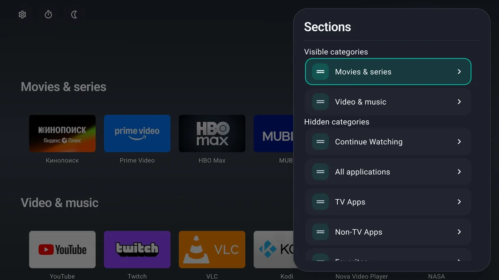
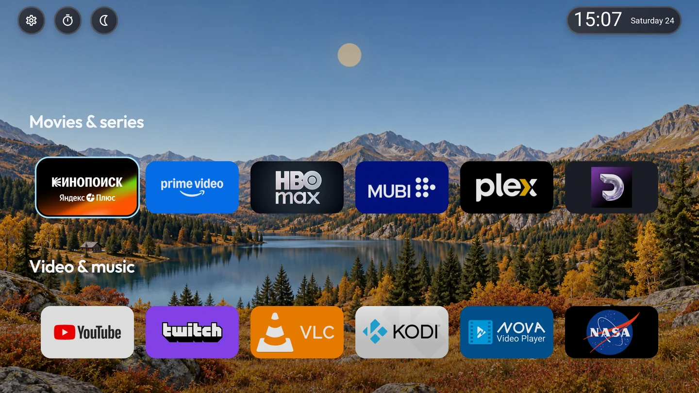
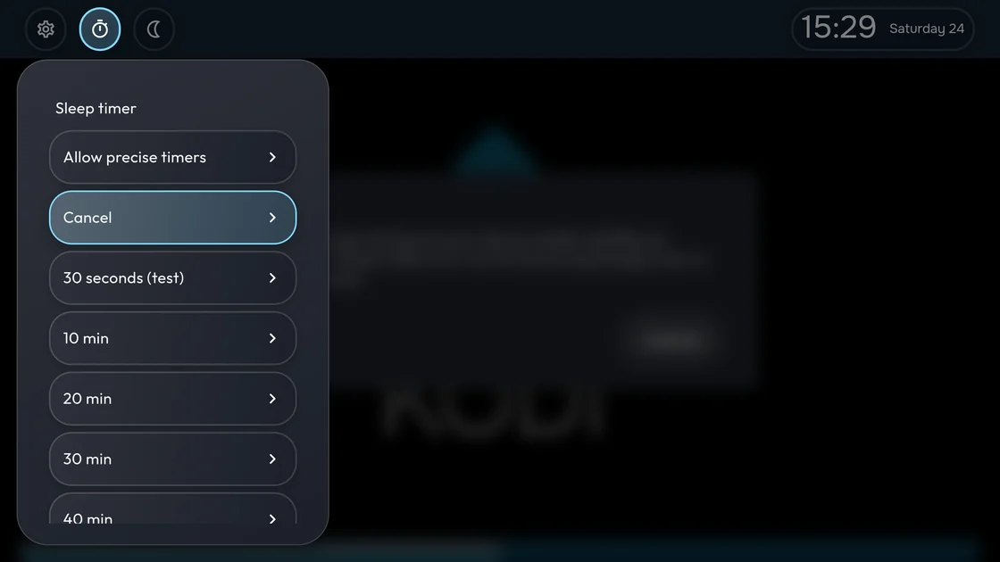

Your apps, in your order
Create sections, pin favorites, and hide apps you rarely use. Display your apps in rows or grids.
For Android TV and Google TV
Put your favorite apps in one place, make it look the way you like, and control it from your remote. The home screen has no ad blocks.

02 Features
From organizing apps to watching TV at night, customize the things you use every day.

Create sections, pin favorites, and hide apps you rarely use. Display your apps in rows or grids.

Open your favorite actions with the remote. Add a clock, weather, calendar, network status, and TV inputs to the top panel.
Assign actions to short and long presses. Open an app or the quick settings panel with one press.
Change tile sizes, labels, colors, and transparency. Add your own wallpaper or a landscape that changes with the time of day.
Set warmth and dimming manually, on a schedule, or at sunset. On compatible devices, the sleep timer puts your TV in standby.
Save settings manually or on a schedule and transfer them to another TV.
03 Installation
For Android TV and Google TV televisions and streaming devices running Android 9 or later.
Download APK User guideOpen the latest release. Choose the universal APK if you are unsure which architecture your TV uses.
Open the APK on your TV. If prompted, allow installation from the source you used.
Open CuteLauncher and arrange your apps. Selecting a default home app depends on your TV firmware.
System actions, including Home, HDMI, and ADB, depend on your firmware and granted permissions.